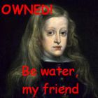

Carlos II de España
 De: La Frikipedia, la enciclopedia extremadamente seria.
De: La Frikipedia, la enciclopedia extremadamente seria.
| De la serie gobernantes de ayer y de hoy:
|
| Carlos II de España
|
| 
|
| Más conocido por "El Hechizado"
|
|
| Nacimiento
|
1661
|
| Muerte
|
1700
|
| Cargo
|
 Rey de España Rey de España
y de huevo de sitios más
|
| Ideología
|
Mongólica Enfermiza
|
| Nacionalidad
|
Apañola
|
| Cónyuge
|
Mariana de Neoburgo, ahunque en la intimidad era Gey
|
| Dinastía
|
Habsburgo.
|
| Notas
|
Este tío era más frágil que una copa de cristal en manos de un borracho
|
Carlos II fue un rey español de alguna época lejana cuando todos éramos Dinio, N'Dongo de Habsburgo y una larga lista de excelencias.
Hazañas
- Fue el primero en comerse el codo.
- Rebatió su récord comiéndose el otro.
- Perdió todas las guerras que empezó.
- Eliminó la teoría que decía que la Tierra es plana. Todo el mundo sabe que es cúbica.
- Hizo independizarse a Portugal porque no le dejaban toallas portuguesas para taparse los ojos y no verse la cara. Para deshacerse de todas esas toallas las quemaron en sus incendios portugueses.
- Abdicó en Felipín de Anjóu a cambio de una galleta.
- Inventó los supositorios anales de sabores.
- Entrenó a Bruce Lee al cual entregó su más famosa frase, hasta que Bruce murió en el espacio exterior.
- Fundó la Organización Síndrome de Down.
- Tiene una página web que creó un día que se metió una buena dosis de LSD [1]
¿Sabías qué...
- ...fue el hermano bastardo de Camilo VI y primo de Maiqel Yaxon I?
- ...fue el primer metrosexual de la península de las españas?
- ...fue el primer ser de la historia en hacerse un lifting facial?
- ...a partir de su reinado, a los reyes se les comenzó a llamar "Su Alteza" (en femenino)?
- ...fue el primero en aprobar moralmente la homosexualidad hasta que los PePeros se manifestaron?
- ...fue el primero en pactar un acuerdo de paz con la comunidad de vecindarios hasta que los PePeros se manifestaron?
- ...en Salsa Rosa le acusaron de robarle los tazos de Pokémon a un niño de 7 años?
- ...murió sin descendencia dejándolo todo a sus nietos?
- ...tenía más títulos que la saga Harry Potter?
- ...no usaba protección solar?
- ...pudo independizar Cataluña en vez de Portugal, pero declinó a cambio de una galleta?
- ...su firma era constantemente amorfa y era facilísima falsificarla?
- ...era el primer hombre semilíquido?
- ...una leyenda decía que en su encéfalo había mas antimonio que cerebro?
Citas ©
- Be water my friend.
- Siempre nos quedará Cuenca...
- ツずねウみヰチヺざゞ (que traducido del oriental significa "Hojiko tay bukake ozigoka jai, kagon dyos", y cuánta razón tenía, qué sabias palabras).
- Espejito espejito, dime quién es la más bella del reino.
- Hola, ¿qué tal? ¿nos conocemos de algo?/¿estudias o trabajas?
- Te via poné do vela negra (años después la bruja Lola hizo un cover/remake de esta frase)
- ¡QUIERO UNA GALLETA!
Autor(es):
- Nexo
- Jowsh
- MURO DE AGUAS
- Govi108
- Nemesis
- Carlitos DeaD
- Atholon63
- Kyrowind
- Generibot
- Fdecus
Frikipedia 2005-2016, Licencia
GFDL 1.2 - Extraído por FrikiLeaks